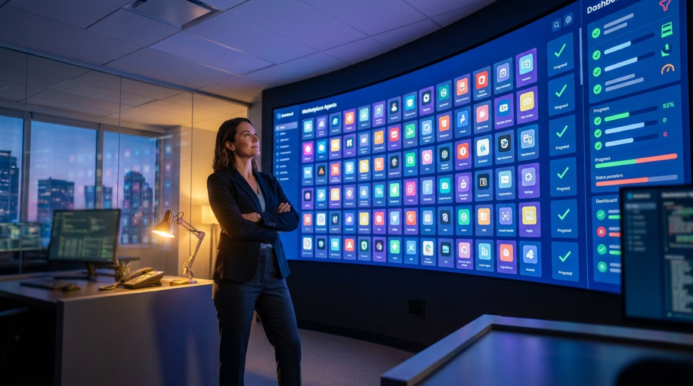

"As organizations proliferate agents across Salesforce, ServiceNow, Microsoft, and homegrown tooling, the absence of a cross-vendor governance layer is an audit and compliance gap in the making."
— SAPinsider, on the problem the AI Agent Hub is built to solve
Every enterprise software vendor is now shipping AI agents, and that is quietly becoming a problem. When your finance agents come from SAP, your service agents from Salesforce, your IT agents from ServiceNow, and a dozen more from homegrown projects, nobody can answer a simple question: which agents are running, who built them, and what are they allowed to do? At Sapphire 2026, SAP's answer was the AI Agent Hub, a single marketplace and control tower for discovering, deploying, and governing every AI agent in the enterprise, whether or not SAP built it. With more than 680 partner agents submitted before it even opened, here is what it is and why it matters.
What SAP Actually Announced
The SAP AI Agent Hub is a central marketplace for discovering, managing, and governing AI agents across both SAP and non-SAP environments. SAP unveiled it at Sapphire 2026 in Orlando in May, with general availability targeted for the third quarter of 2026. Crucially, it is housed within LeanIX (SAP's enterprise architecture management tool) and, according to SAP CTO Philipp Herzig, will be included in the Business AI Platform at no additional charge, a deliberate pricing signal that SAP wants to be the default governance layer for the entire enterprise agent ecosystem, not just its own.
The scale SAP is building toward is concrete. At launch the company pointed to 224 agents and 51 domain assistants spanning autonomous finance, spend management, supply chain, human capital management, and customer experience, all built under ISO-certified processes for SOX audit compatibility. And the partner momentum is real: more than 680 agents had been submitted by SAP's partner ecosystem before the hub officially opened.
The One-Sentence Version
The AI Agent Hub is SAP positioning itself as the governance layer of record for enterprise AI agents, a single place to see and control every agent, model, and connector in your landscape, no matter which vendor built it. It is bundled into the Business AI Platform for free precisely so it becomes the default place everyone looks.
The Problem It Solves: "Agent Sprawl"
To understand why this matters, you have to understand a problem that is arriving faster than most organizations realize: agent sprawl. Over the last two years, enterprises went from having zero AI agents to having them scattered across every major platform they own, plus a growing pile of homegrown ones. Each is useful in isolation. Collectively, they create an audit and compliance gap, because there is no single place that knows what all of them are doing.
This is the governance shortfall we flagged in our analysis of why AI stalls at scale, where only 21% of organizations reported having a mature model for governing AI agents even as the vast majority planned to deploy them. The AI Agent Hub is SAP's direct answer to that statistic. Rather than governing only SAP's own agents, it is designed as a vendor-agnostic layer that covers every agent, every large language model, and every MCP server in an enterprise, regardless of who built it or where it runs.
A quick definition, because it matters here: an MCP server (Model Context Protocol server) is a standardized connector that lets AI agents securely access tools and data. As enterprises wire agents into more systems through MCP, the number of these connections explodes, and each one is a potential security and compliance exposure. A hub that can inventory and govern them centrally is not a luxury; it is quickly becoming a requirement.
How It Fits with Joule Studio 2.0
The Hub is the storefront and control tower; Joule Studio is the workshop where agents get built. SAP used Sapphire 2026 to push Joule Studio 2.0 hard, and the two are designed to work together: you build an agent in Joule Studio, then publish, distribute, and govern it through the Agent Hub.
Joule Studio 2.0 is notably open for an SAP product. It supports multiple development frameworks including Python, ABAP, LangChain, Pydantic AI, and LlamaIndex, and even integrates with third-party coding tools like Claude Code and Cursor. It uses n8n for visual multi-agent orchestration, the same automation platform SAP invested in and which we covered in our piece on SAP's n8n investment. Agents built in the studio can tap SAP's Knowledge Graph, spanning a reported 452,000 tables and 7.3 million data fields, which is the structured business context that makes an SAP-grounded agent more reliable than a generic one. To lower the barrier further, Joule Studio is free through December 31, 2026 for all BTP customers.
The Most Strategic Feature: Agent-to-Agent Interoperability
The single most forward-looking piece of the announcement is support for the A2A (Agent-to-Agent) protocol. In plain terms, A2A lets agents from different vendors call each other. SAP's implementation is bidirectional: third-party agents such as Microsoft Copilot Studio, Google Agentspace, and Salesforce Agentforce can invoke SAP Joule agents, and vice versa.
This is a genuinely important strategic choice. SAP could have tried to lock customers into an all-SAP agent world. Instead, it is betting that the enterprise reality is irreversibly multi-vendor, and that whoever provides the neutral interoperability and governance layer wins a more durable position than whoever ships the most agents. It is the same logic behind the clean, API-first thinking we explored in headless ERP architecture: in a world of many interchangeable components, control of the connective and governance layer is the real prize.
Why the "Free" and "Open" Choices Are Shrewd
Bundling the Hub at no extra cost and supporting rival agents through A2A look generous, but they are strategic. By making the governance layer free and vendor-neutral, SAP maximizes the odds that it becomes the system of record for enterprise agents, the place auditors, security teams, and CIOs go to see everything. Owning that vantage point is worth far more than charging for it.
The Partner Play: 680 Agents and a €100M Fund
SAP knows it cannot build every agent itself. The breadth of industries, regions, and regulatory regimes its customers operate in makes a single-vendor agent library impossible, which is exactly why the partner ecosystem is central to the strategy. The 680-plus agents submitted before launch already include highly specific, regulation-driven use cases: GST filing for India, VAT reconciliation for the EU, e-invoicing for Latin America, collections orchestration, HR screening, and predictive maintenance.
To fuel this, SAP announced a €100 million Partner-Led Adoption Program, channeling investment into Joule Studio credits, sandbox environments, joint go-to-market efforts, certification fast-tracks, and industry-specific agent incubators. The message to partners is clear: build your specialized agents on SAP's platform, and SAP will help fund and distribute them. For the consultancies and ISVs in SAP's orbit, this reframes the opportunity we described in the shift toward autonomous AI agents in the enterprise, from a services engagement into a product one.
At a Glance: The Numbers That Matter
| Detail | What SAP Said |
|---|---|
| Announced | SAP Sapphire 2026, Orlando (May 2026) |
| General availability | Targeted Q3 2026 |
| Pricing | Included in Business AI Platform at no extra charge |
| Housed in | LeanIX (enterprise architecture management) |
| SAP agents / assistants | 224 agents, 51 domain assistants |
| Partner submissions | 680+ before launch |
| Partner fund | €100 million adoption program |
| Interoperability | A2A protocol (Microsoft, Google, Salesforce agents) |
| Knowledge Graph | ~452,000 tables, 7.3 million fields |
The Honest Caveats
A launch is not a deployment, and a few cautions are worth holding onto. General availability is a Q3 2026 target, so much of this is still forward-looking rather than in production at scale. A vendor-neutral governance layer is only as good as the third parties who choose to integrate with it; A2A support means SAP can call others' agents, but real cross-vendor governance depends on those vendors playing along over time. And a marketplace of 680-plus partner agents raises its own quality and trust question, which is why SAP's ISO-certified, SOX-compatible certification framework for agents before they reach the marketplace will matter enormously in practice.
There is also a candid tension worth naming. SAP is simultaneously the largest producer of enterprise agents and the vendor proposing to be the neutral referee that governs everyone's agents. That dual role is powerful, but customers and competitors will reasonably watch whether the "vendor-agnostic" layer stays genuinely even-handed as it matures.
Why This Matters for Enterprise Leaders
Step back and the AI Agent Hub is a marker of where enterprise AI is heading. The first phase was about getting agents to work at all. The phase SAP is now targeting is about managing them, the unglamorous but decisive work of inventory, permissions, audit trails, and interoperability that separates a pile of clever demos from a governed, production-grade agent workforce.
For any organization already accumulating agents across multiple vendors, the practical takeaway is to start treating agent governance as a first-class discipline now, before the sprawl becomes unmanageable. Whether or not you standardize on SAP's Hub specifically, the questions it is designed to answer, what agents do we have, who owns them, what can they touch, and can we prove it to an auditor, are the ones every enterprise will have to answer within the next year or two. SAP has made an aggressive bid to be the place those questions get answered. The next few quarters, as Q3 general availability arrives and partners actually deploy, will show whether the market agrees.
